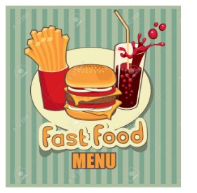

Fast Food Sites mission is to provide smart and easy to use websites to the food delivery businesses such as fast food and takeaway to help independent venues to provide the same level of service as the global food ordering sites. We believe there is a mutual benefit in forging such relationship with the food delivery outlets and it will enable healthier growth for both us and our customers who will not be forced to offer a large portion of their income to global food ordering companies in order to access the similar service.
FastFoodSites.com is owned and operated by Informist Ltd, a company based in Coventry with long background in development of website and online services for the hospitality and delivery industry.
We aim to continuously add new innovative products and services to our offering to enrich the customer experience and help the outlets to retain a lead in the take away delivery sector.